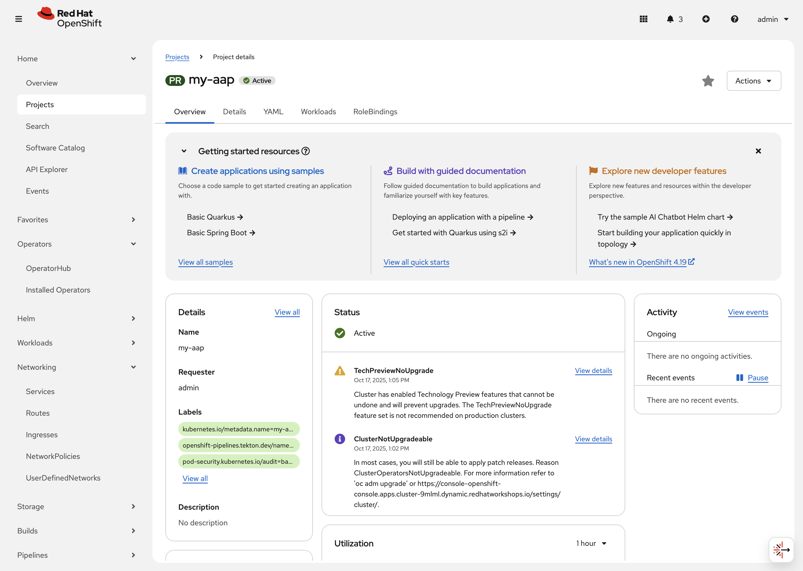
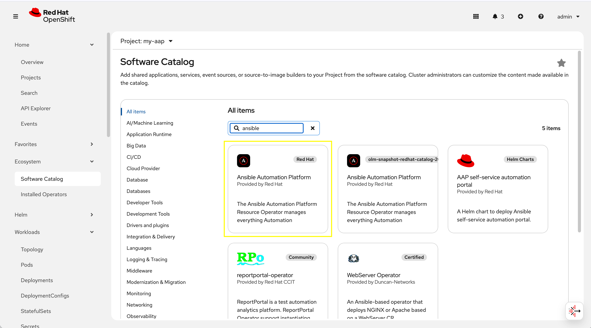
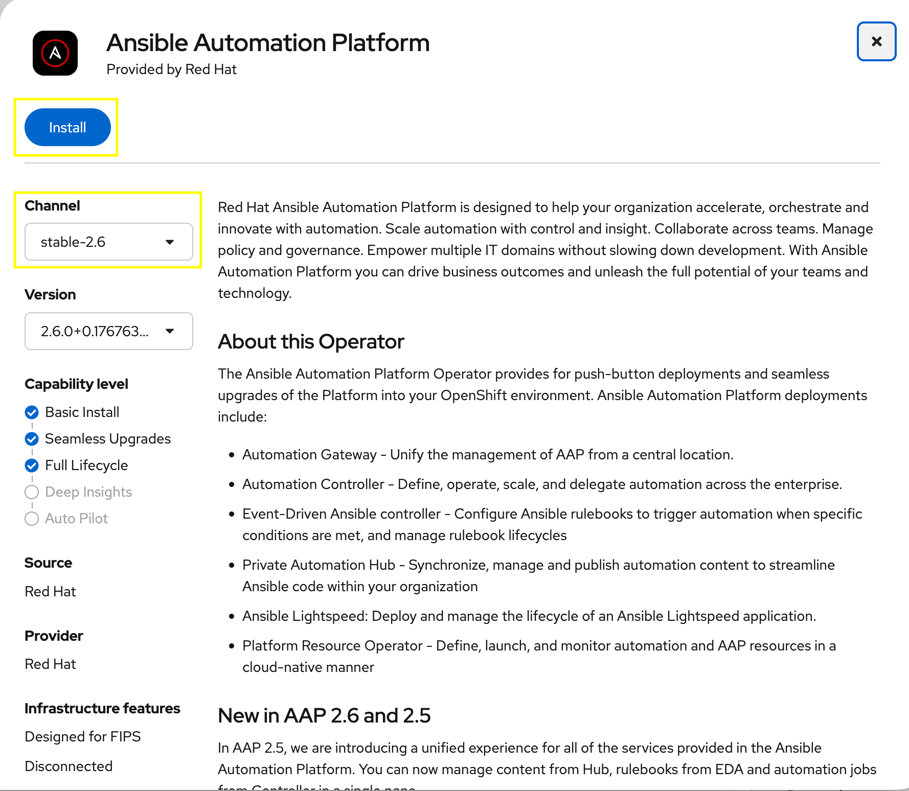
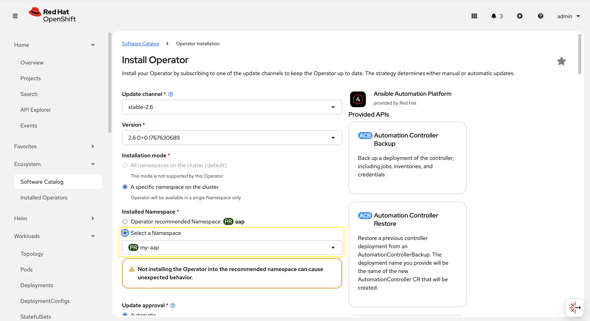
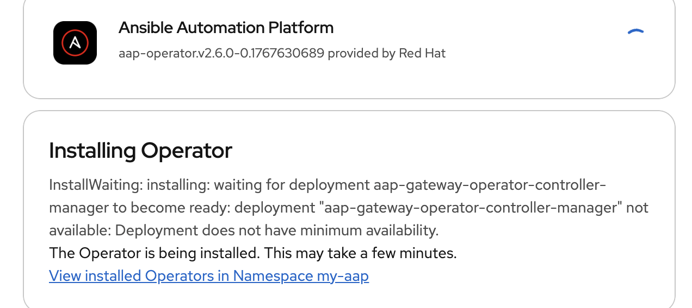
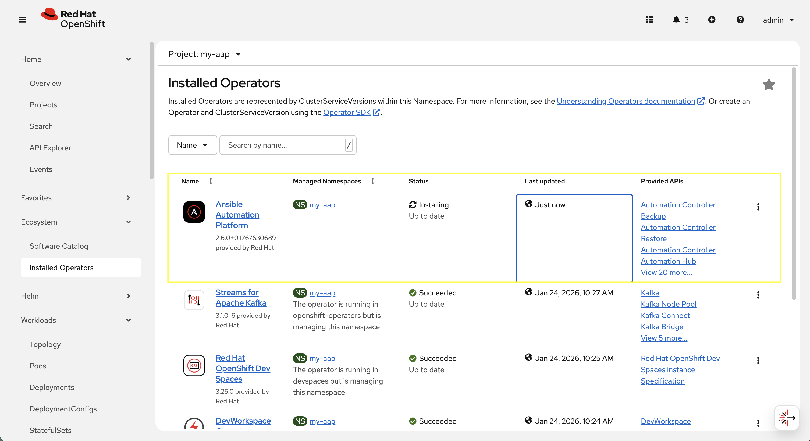
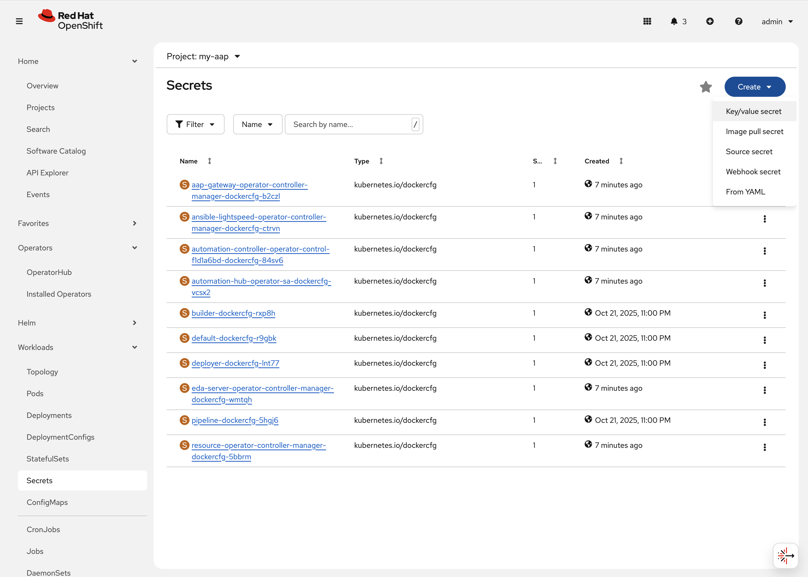
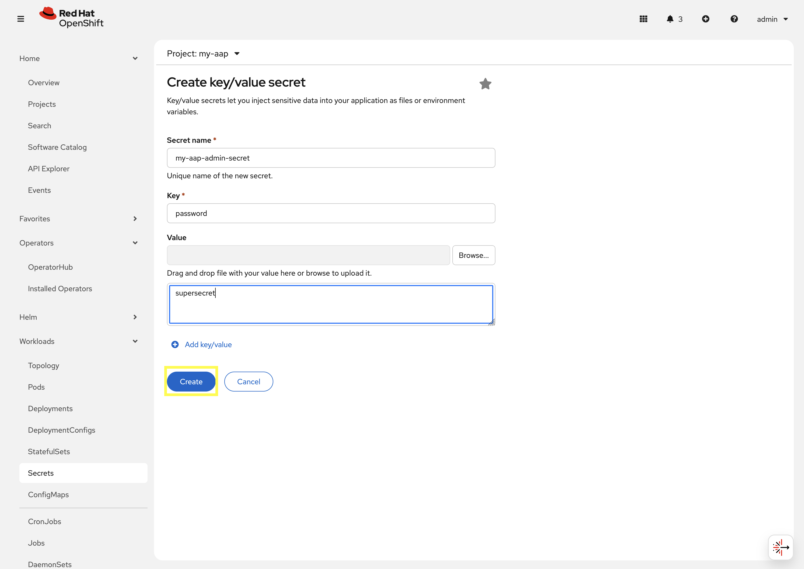
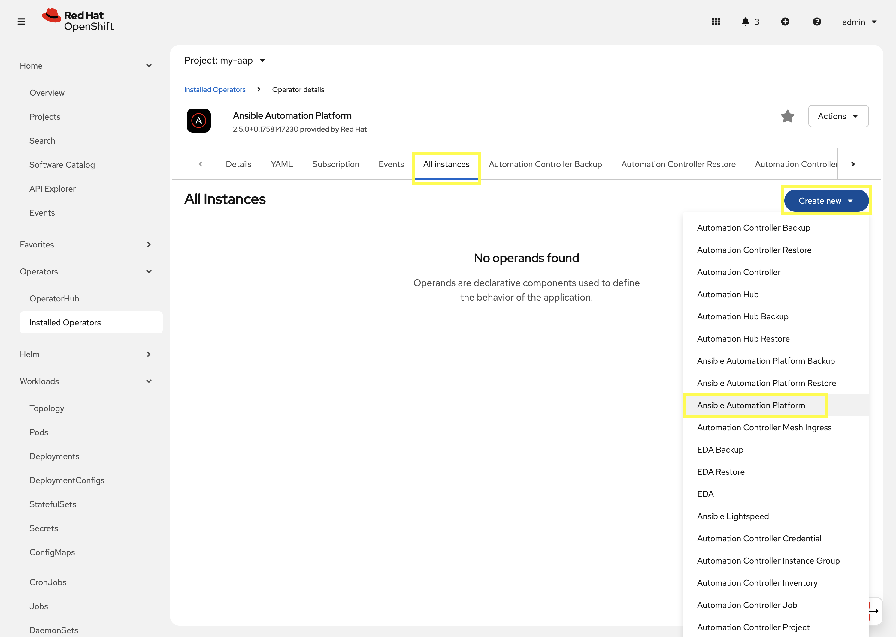
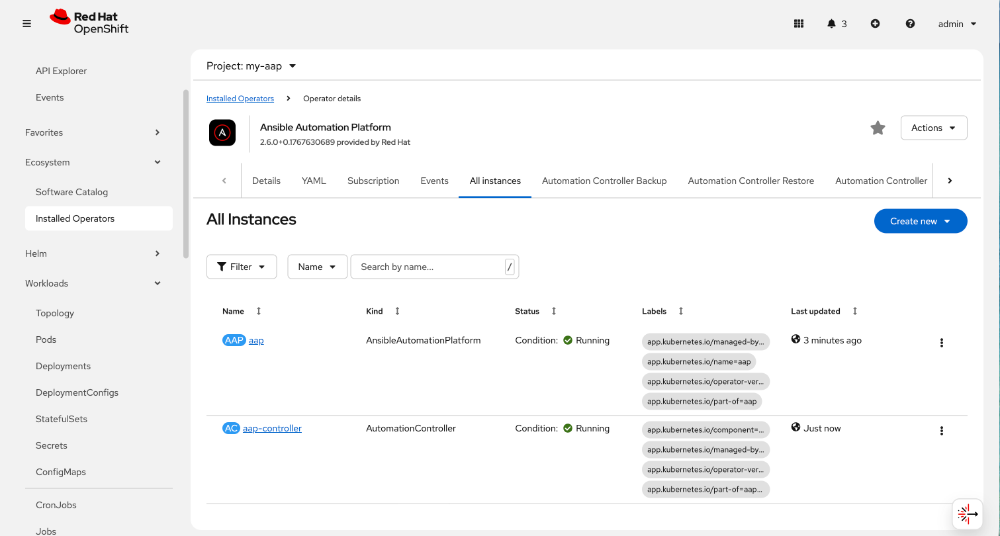

Deploy another AAP instance using the AAP Operator
Now that you’re familiar with different components that are managed by the AAP operator, let’s try to deploy another instance of AAP onto the same OpenShift cluster.
This will demonstrate the steps needed to deploy an instance of the AAP operator and how to make some customizations to the deployment.
3.1: Create a new namespace
First, create a new project in which the AAP operator can be installed into.
-
Navigate to Home on the left hand navigation → Projects.
-
Click on the Create Project button.
-
Fill out the name field with
my-aapand hit Create.
You are now redirected to the Project details page of the newly created project.

3.2: Install the operator
Now that we have a project to work within, install another instance of the AAP operator into this namespace.
-
Navigate to Ecosystem on the left hand navigation → Software Catalog.
-
Underneath All Items use the
Filter by keyword…input and enteransible.
-
Click on the
Ansible Automation Platformbox shown. -
A dialog box with information about the operator will be shown. Feel free to read details and information about the operator.
-
Underneath Channel select stable-2.6.
-
Click the Install button.

Another dialog box will be shown with more options.
-
The only change that needs to be made is under Installed Namespace select the Select a Namespace radio button. Ensure the namespace that was created in the previous step is shown in the dropdown:
my-aap.
-
Click the Install button.

The operator will take moment to install itself into the selected namespace.
-
Select View Operator to view details of the installed AAP operator.
-
Navigate to Ecosystem on the left hand navigation → Installed Operators.
-
Next to the
Project:dropdown in the top left, ensuremy-aapis the project shown.Under the list of installed operators you should now see
Ansible Automation Platformwith a version of2.6.+0.1…and a status ofSuccessful.
-

The operator is now successfully installed into the my-aap namespace using a namespace scoped installation method.
3.3: Create a custom admin secret
By default, the AAP operator will create a secret containing a random value for the initial admin password used to login to the deployed AAP instance.
Instead, we can customize the admin password for AAP by creating an OpenShift Secret and instructing the operator to use the value specified within that secret.
-
Navigate to Workloads on the left hand navigation → Secrets.
-
Click on the Create button and select Key/value secret.

-
For the Secret name, enter
my-aap-admin-secret. -
For the Key enter
password, this is the name of the key that the operator will look for in this secret and must be namedpassword. -
For value enter
supersecretor any other value of your choosing. -
Click the
Createbutton.

You are now redirected to the Secret details page of the newly created Secret. This Secret will be referenced in the following section.
3.4: Deploy the operator
Deploy a new instance of AAP using the operator.
-
Navigate to Ecosystem on the left hand navigation → Installed Operators.
-
Next to the
Project:dropdown in the top left, ensuremy-aapis the project shown. -
Click on the
Ansible Automation Platformoperator. -
In the toolbar, click on
All instances. -
Click on the Create new button and select Ansible Automation Platform.

This will bring up the form view to customize the values of the Ansible Automation Platform deployment.
For this exercise, we’ll use the YAML view and paste a simple snippet in.
-
Click on the
YAML viewradio button. -
In the code entry field, paste the following YAML values:
Custom AAP DeploymentapiVersion: aap.ansible.com/v1alpha1 kind: AnsibleAutomationPlatform metadata: name: aap namespace: my-aap spec: admin_password_secret: my-aap-admin-secret image_pull_policy: IfNotPresent no_log: false redis_mode: standalone route_tls_termination_mechanism: Edge controller: disabled: false eda: disabled: true hub: disabled: true lightspeed: disabled: true -
Click the Create button.
The snippet above is a YAML definition of the AnsibleAutomationPlatform we want the operator to deploy. It specifies that the Gateway and Automation Controller components to be created, but disabling the deployment of Automation Hub, EDA, and Lightspeed.
Notice the value of namespace: my-aap in the snippet above is the name of our created project. In addition, notice admin_password_secret: my-aap-admin-secret specifies the Secret containing the admin password that should be used for the newly created instance.
|
The operator will now recognize the newly created AnsibleAutomationPlatform resource and begin creating and managing the components until the platform is fully deployed.
In the next section, we’ll take a look at different ways to monitor the progress of the actions the operator is performing.
3.5: Monitor the installation progress
There are several ways to monitor the progress of the AAP deployment:
-
You can track the logs of the operator manager pods for each component by looking at the
<component>-controller-operator-manager-<id>pod logs. -
Deployments, pods, secrets, etc will begin to be created. Feel free to monitor their individual progress.
-
Resources belonging to the custom resource begin to be populated under the
Resourcestab.
When the AnsibleAutomationPlatform custom resource is successfully deployed, the status of it and the AutomationController instance should show Conditions: Running, Successful.
This can be verified by performing the following steps:
-
Navigate to Ecosystem on the left hand navigation → Installed Operators.
-
Next to the
Project:dropdown in the top left, ensuremy-aapis the project shown.-
Click on the
Ansible Automation Platformoperator. -
In the toolbar click on
All instances. -
Look at what is displayed in the
Statuscolumn on this page. -
When the status for both components (
aapandaap-controller) showsConditions: Running, Successful, then proceed to the next section.It will take about 10-15 minutes for the AAP deployment to complete. 
-
3.6: Access the deployed instance
Now that the operator is showing the AAP instance as being successfully deployed, attempt to access the newly created instance.
-
Navigate to Networking on the left hand navigation → Routes.
-
Click on the
Locationfor theaaproute. -
A new browser tab will be opened to the URL resulting in the login page for Ansible Automation Platform being displayed. Enter
adminandsupersecretif you used the default value within the Secret you created.-
You’re now logged into the newly deployed AAP instance!
-
-
Go ahead and attach a subscription to this deployment by using a service account and password and choosing any valid subscription. Your Red Hat login used for cloud.redhat.com can also be used instead of a service account and should have ample subscriptions to use.
You may need to create a manifest using your account, refer to kbase 5807761 -
Once complete, you will see the AAP dashboard.
The only component of AAP that is currently deployed within this instance is Automation Controller, unlike the previous deployment we have been working with in prior exercises.